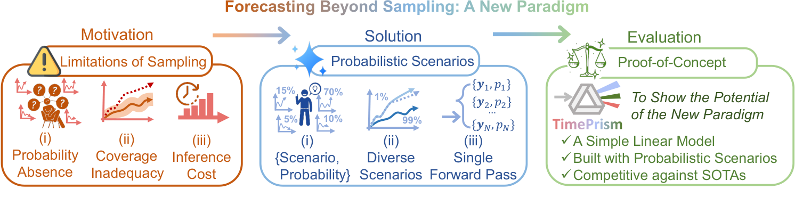
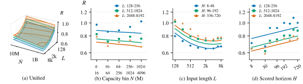
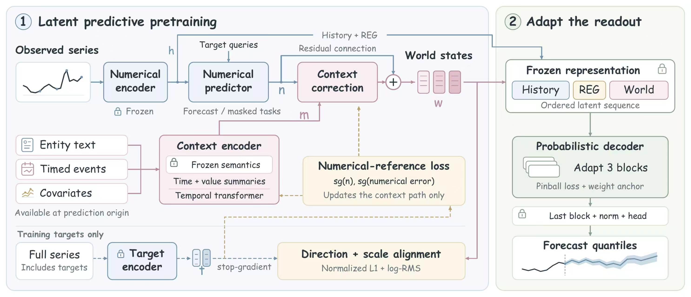
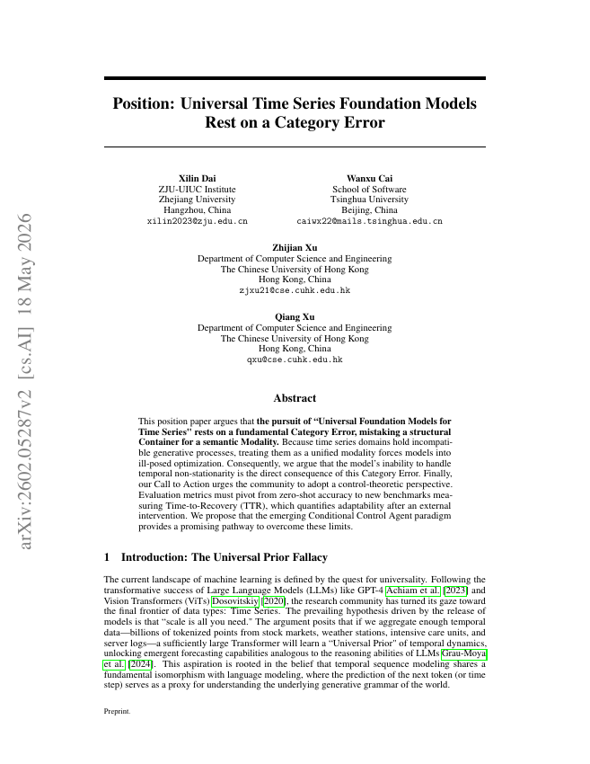
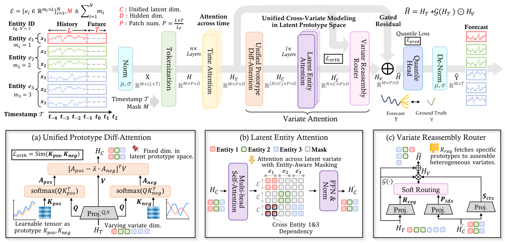
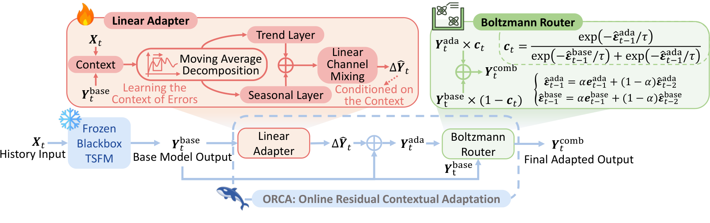
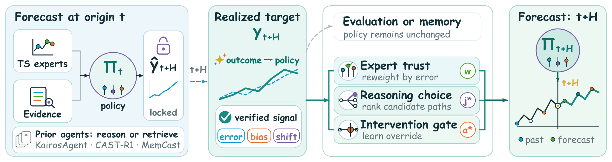
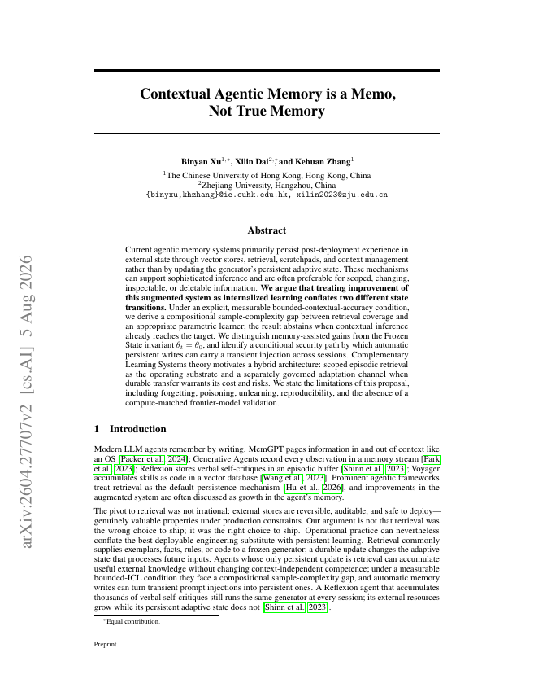
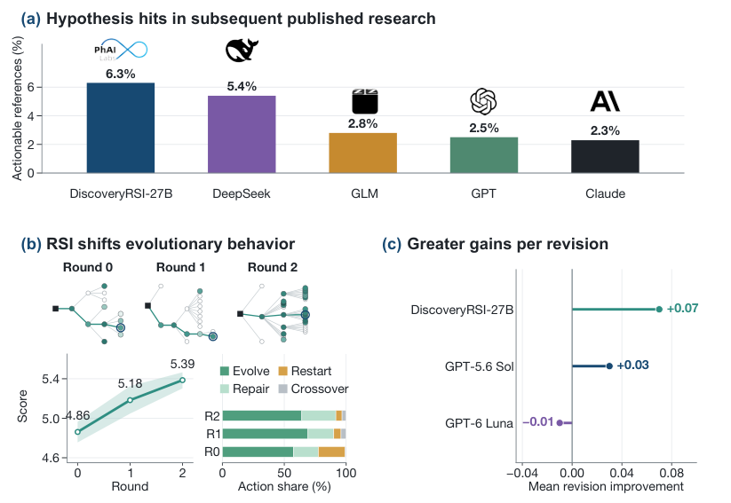

The Chinese University of Hong Kong QS 2027 #18
Ph.D. student, Computer Science and Engineering
Advisor: Prof. Qiang Xu
Aug 2026 — Present
Ph.D. Student
Computer Science & Engineering
The Chinese University
of Hong Kong
Advised by Prof. Qiang Xu
xldai26@cse.cuhk.edu.hkI am a Ph.D. student in Computer Science and Engineering at The Chinese University of Hong Kong, advised by Prof. Qiang Xu. I am also a research intern in the Time Series Foundation Model team at Ant International.
My research centers on Foundation Models for the Future: Forecasting, Evolving, and Science Discovering. I ask how foundation models can anticipate changes that have not yet happened, acquire abilities they do not yet have, and help discover laws we do not yet understand.
I work on time-series foundation models and their scaling laws, multimodal, probabilistic and agentic forecasting, and predictive world models. I also explore the reliability, memory and evolution of large language models, and their role in scientific discovery.
My work includes seven first-author papers, four accepted at CCF-A conferences or SCI Q1 journals, and three technical reports. I have also co-authored one CCF-A paper as a shared first author and five other CCF-A papers. My publications have received over 180 citations on Google Scholar.
Ph.D. student, Computer Science and Engineering
Advisor: Prof. Qiang Xu
M.Sc. in Electrical Engineering
B.Eng. in Electrical Engineering and Automation
Exchange Program in Electrical Engineering and Computer Sciences (EECS)
Selected papers and technical reports.

Parallel probability modeling that directly predicts multiple future scenarios.

Analyzing the capability boundaries and scaling behavior of time-series foundation models.

Learning context-conditioned representations of future states to build a predictive world model.

Examining data structure, semantic modalities and universal foundation models for time-series forecasting.

Unified modeling of heterogeneous multivariate time series across datasets.

Black-box online adaptation for time-series foundation models.

Using progressively revealed outcomes to revise and improve an agent’s forecasting policy.

Comparing context-based agentic memory systems with memory stored in model parameters.
Physics-gated neural networks for stable battery state-of-charge estimation over repeated cycles.
Physical knowledge for battery-state prediction robust to temperature variation and sensor noise.

Generating and revising testable hypotheses, then recursively learning from research experience.
Background. Foundation models and LLM agents for forecasting and optimization in FX trading and liquidity management. The team covers over US$100 billion in trading and US$1.4 trillion in cash-flow management.
My role. Lead and co-lead work on foundation models, online evolution and forecasting agents, and participate in foundation-model development.
Outcomes. Two technical reports, including one as first author; two time-series foundation-model papers accepted at NeurIPS 2026, including one as first author.
Background. Transfer pretrained image–text representations to downstream systems to verify model outputs, select training data and guide model behavior, with a focus on cross-model generalization and controllability.
My role. Contributed to semantic verification, knowledge distillation, cross-model transfer and generative optimization with vision–language models.
Outcomes. Four co-authored CCF-A conference papers and one shared-first-author CCF-A paper (NeurIPS 2026).
Background. A National Natural Science Foundation of China General Program project and a Hangzhou key research project. Combined electrochemical and electrical knowledge with neural networks to address challenging prediction problems in battery management.
My role. Led a team working on battery health, aging and state estimation, combining physical mechanisms with data-driven learning.
Outcomes. Two first-author SCI Q1 papers in IEEE TTE and IEEE TIE; over ten papers with the team in leading electrical and electronic engineering journals and conferences; eight patent applications, including two granted patents.
A time-series foundation-model project I participated in.
Part of a wider set of open research projects.
Our shared-first-author Agentic Memory work was shared by DAIR.AI on X, reaching over 26K views, and discussed by the Facebook AI community, YouTube and Xiaohongshu. Work I led or participated in received three features in major AI media including Synced and Xinzhiyuan, with over 47K views in total.
Interested? You’re welcome to read more:
Reviewer for ICLR, NeurIPS, and ACL, and IEEE Transactions journals.